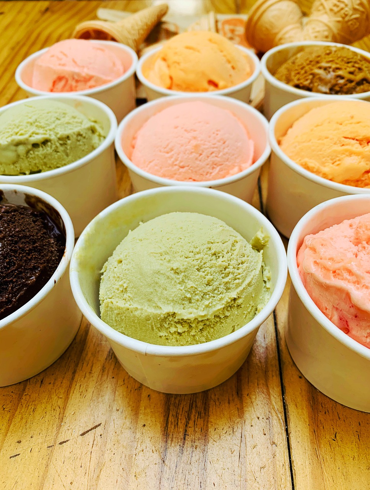
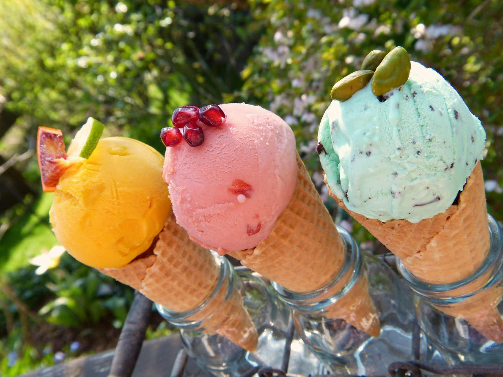

ABOUT US
Through our seasonal offerings, we continually strive to craft new and tantalizing flavors, ensuring that your ice cream experience remains fresh and exciting. Our commitment to quality is unwavering, as we prepare our ice cream from scratch in-house, using only the freshest, natural, and sustainably-sourced whole ingredients. We prioritize local, seasonal, and organic sourcing whenever possible to create an ice cream that's not just a treat but a celebration of the finest flavors. Enjoy the mouthful of joy that Milky Way brings to every scoop!
Our promise of pure and unprocessed ingredients is a reflection of our dedication to serving the very best. We believe that the Milky Way experience should not only tantalize your taste buds but also bring peace of mind, knowing that our chemical-free mantra ensures that each scoop is a natural delight. It's about offering a guilt-free treat, an oasis of wholesome flavors that everyone can enjoy. At Milky Way, we see ourselves as more than just an ice cream store. We are a hub of creativity and a place where food becomes art. Our team of dedicated artisans and flavor creators pour their hearts into every batch, striving to bring you a symphony of tastes that tickle your senses and ignite your imagination. Our journey is one of constant exploration, where we ask ourselves, "How can we turn everyday ingredients into extraordinary experiences?" This is our culinary mission, and it's what fuels our passion for crafting remarkable flavors.Our dedication to local sourcing and sustainability goes hand in hand with our belief in supporting the community we cherish. By working closely with local vendors and producers, we not only ensure that our ingredients are of the highest quality but also contribute to the growth and prosperity of our neighborhood. As we continue to evolve, we pledge to uphold our commitment to environmental responsibility, using eco-friendly practices that leave a minimal footprint on the planet. As Milky Way continues to be a beacon of culinary innovation, our seasonal offerings allow us to adapt to the ever-changing tastes of our patrons. Each new flavor represents a thoughtful blend of the freshest, natural, and sustainably-sourced ingredients. This commitment to quality and sustainability isn't just a mission; it's a journey we're excited to embark on with our customers, season after season. We invite you to savor the Milky Way experience, where each scoop is not just a treat but a celebration of life's finest flavors and a testament to the enduring bonds of our local community.

OUR MISSION
Each scoop is a testament to our dedication to quality and a promise to deliver an unparalleled taste experience.Our seasonal offerings are not merely a reflection of changing weather; they represent our commitment to staying attuned to the evolving preferences of our patrons. From the warmth of the "Pumpkin Spice Galaxy" in autumn to the cool embrace of "Peppermint Stardust" during the holidays, each season brings a new chapter in our flavor journey. As we continue to evolve and innovate, our pledge to uphold environmental responsibility remains steadfast, ensuring that our practices leave a minimal footprint on the planet.Milky Way invites you to embark on a culinary adventure, where each scoop is not just a treat but a celebration of life's finest flavors. Join us in savoring the joy that comes from supporting local communities, embracing the seasons, and indulging in the purest forms of gastronomic delight. Milky Way's seasonal offerings allow us to adapt to the ever-changing tastes of our patrons. Each new flavor represents a thoughtful blend of the freshest, natural, and sustainably-sourced ingredients. Our commitment to quality and sustainability isn't just a mission; it's a journey we're excited to embark on with our customers, season after season. We invite you to savor the Milky Way experience, where each scoop is not just a treat but a celebration of life's finest flavors and a testament to the enduring bonds of our local community. It's more than ice cream; it's an experience crafted with passion, dedication, and a sprinkle of stardust. Our commitment to quality is unwavering, as we prepare our ice cream from scratch in-house, using only the freshest, natural, and sustainably-sourced whole ingredients. We prioritize local, seasonal, and organic sourcing whenever possible to create an ice cream that's not just a treat but a celebration of the finest flavors. Enjoy the mouthful of joy that Milky Way brings to every scoop!